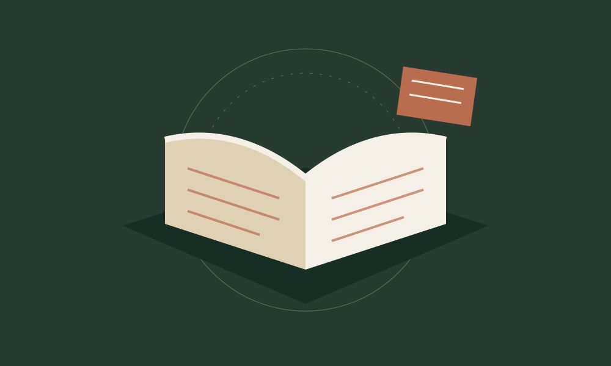
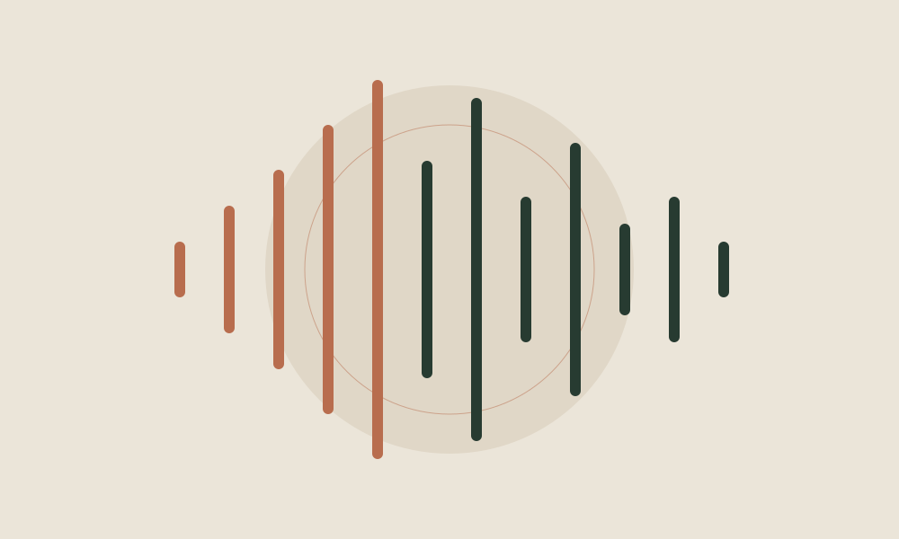

LES LIEUX, AUTREMENT · ÉTAPE 01
Corte, une ville de savoir

Illustration · Transmission du savoirPremière étape · Disponible
Les mémoires se transmettent.
La découverte commence à l’IUT.
IUT de Corse · Campus Grimaldi
Une rencontre entre histoire universitaire et campus d’aujourd’hui.
Trois repères,
une histoire.
01 / L’IUT de Corte
Observer. Toucher. Écouter.
Ouvrir une fenêtre sur le savoir
Vérification de la disponibilité AR…
Les points à découvrir
À votre rythme
LES HISTOIRES PRENNENT VOIX
Une histoire à écouter ou à lire
Enregistrements et ambiances à fournir. Une lecture par synthèse vocale peut lire les transcriptions ; ce n’est pas une archive sonore.
Lire les transcriptions de l’accueil et du récit
Accueil
Récit principal
Ambiances à fournir
Touchez les repères. La scène reste en place.
Diagnostic AR
Consultation 360°
Panorama à fournir
Glissez pour regarder autour de vous, puis touchez un repère. Toutes les fiches restent accessibles sous la vue.
Explorer l’archive
La suite de Memoria Corti
02 · Le Palazzu Naziunale
Étape suivante à préparer. Seule l’étape IUT est disponible dans cette première version.
Les récits de l’IUT
Écoute
Transcription
Votre première étape
Prendre le temps de regarder
- Autour de vous
Installez-vous dans un espace dégagé et restez attentif au lieu qui vous entoure.
- Une surface, une scène
Scannez doucement une surface plane. Lorsque le cercle apparaît, touchez « Placer la scène ».
- À votre rythme
Touchez les cinq repères pour lire les fiches. Retrouvez les récits dans « Écouter » et fermez l’expérience avec « Quitter ».
Placement manuel : un recalage est nécessaire à chaque session. La scène est une évocation du savoir, pas une restitution historique du campus.
Commencez par préparer votre découverte.